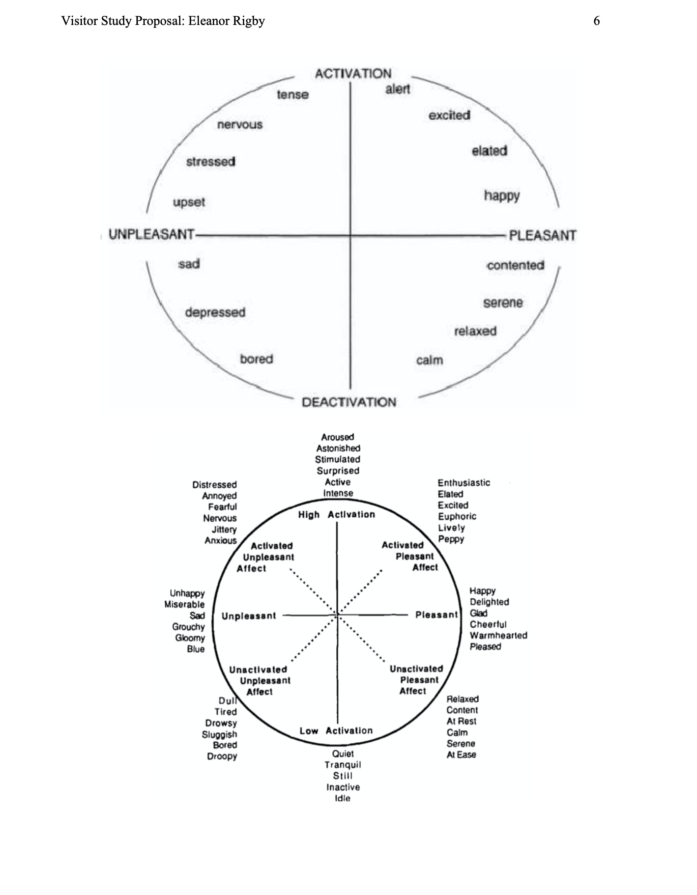
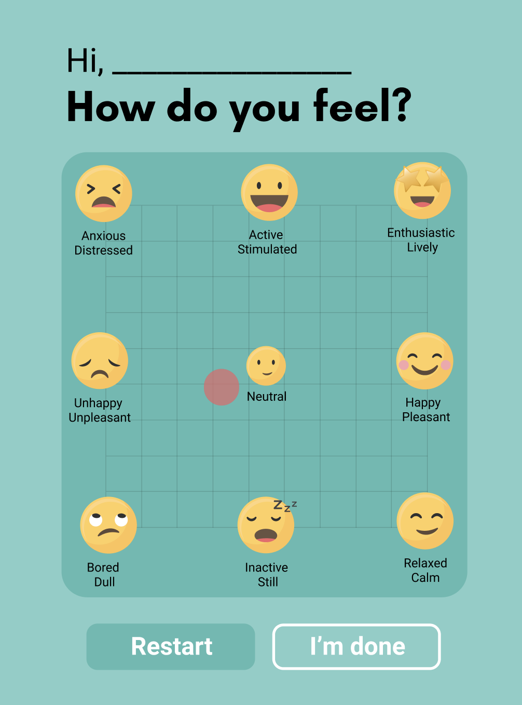
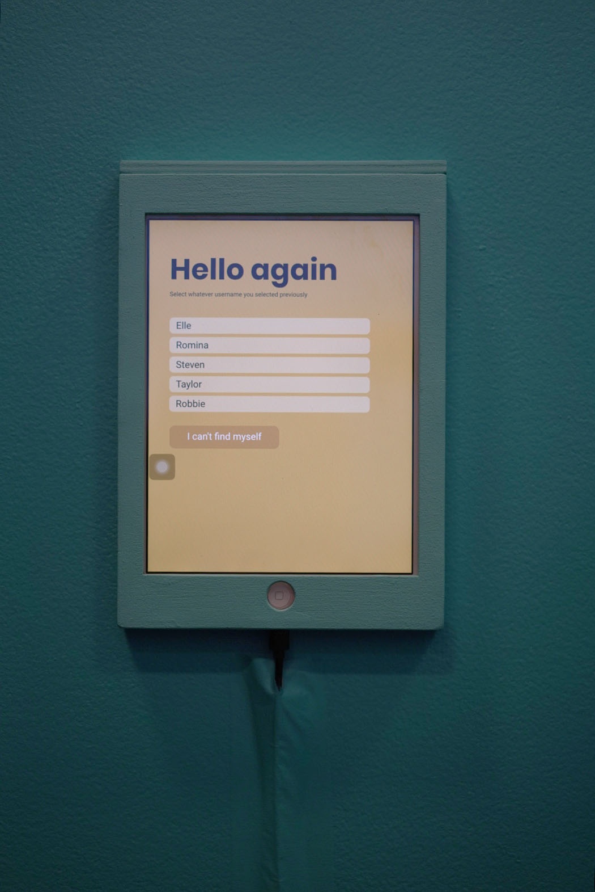
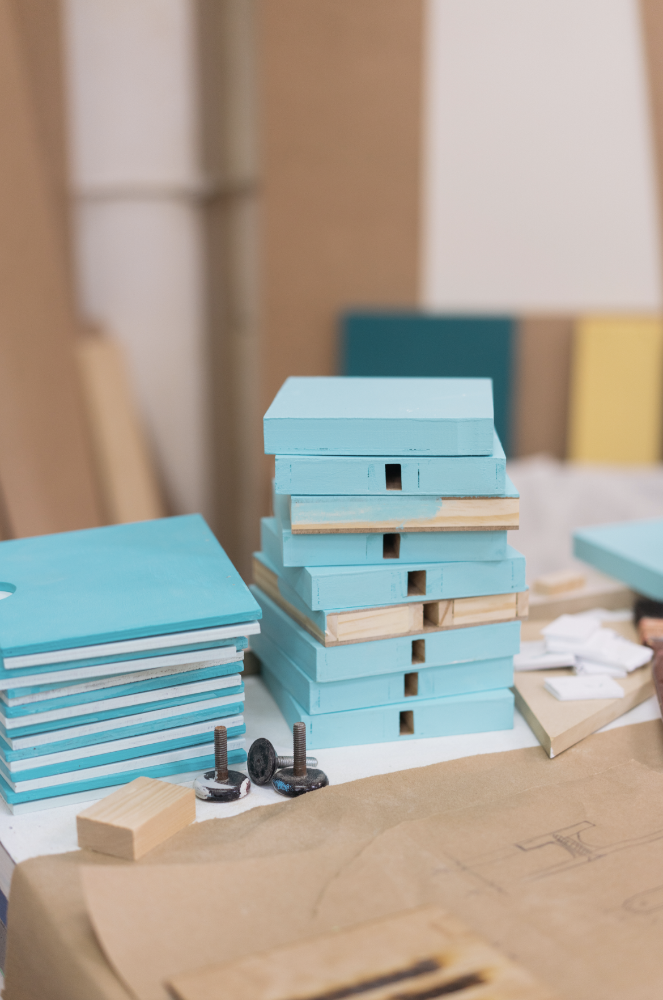
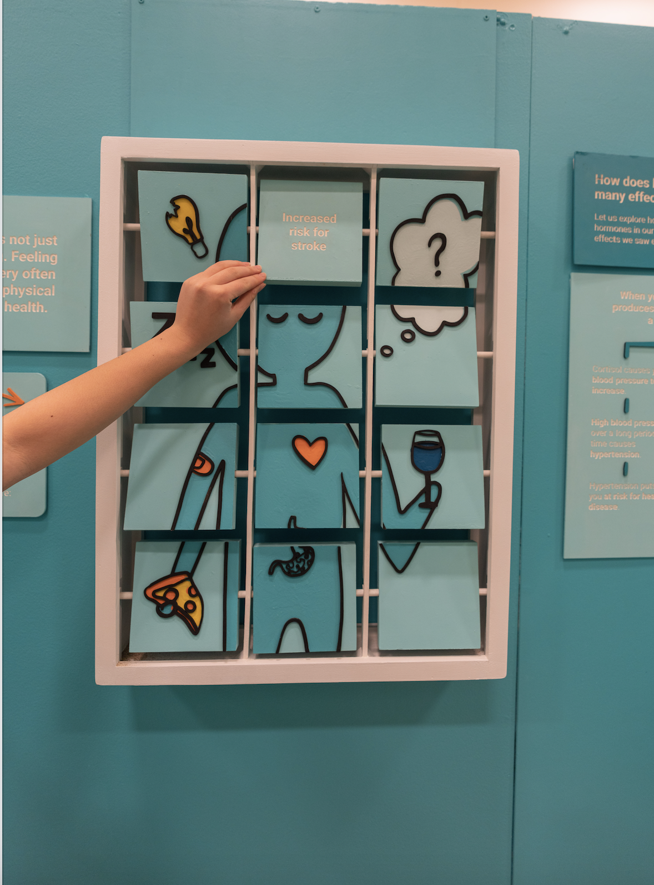
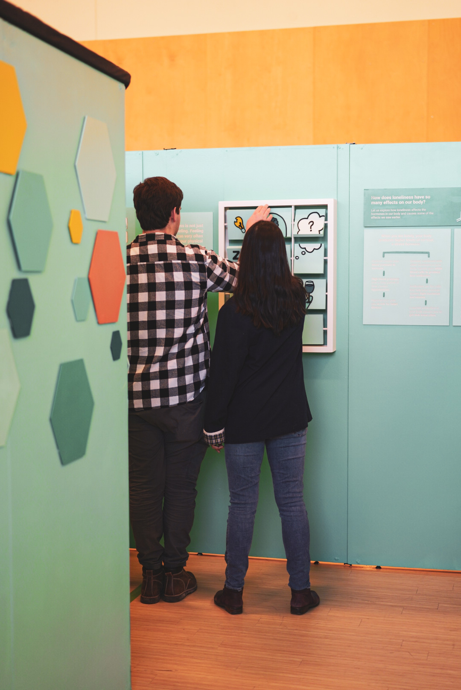

A highlight of the Knowledge Integration (KI) program is the development of an exhibit as part of the annual Museum hosted by the KI department. My team focused on the topic of loneliness and created a visually rich overview of the description of the problem, the prevalence of it and the effects it has on the body. The last section of the exhibit invited the visitors to reflect on their experiences and provided some tips and resources to consult.
My primarily role was to supervise the visual design of the exhibit and the design of the activities for the project. The two key activities addressed the negative effects on the body of chronic feeling of loneliness and and activity comparing the risk of mortality of different risk factors.
Left:
quick visual walkthrough of the exhibit.
Right:
A personal commentary I shared on social media about the exhibit. This year, the exhibit was closed prematurely because of the pandemic so I used Instagram, where I'd sometimes share stories like this, to invite people to see the virtual tour.
- It combines knowing and doing.
- Requires discipline specific expertise transmitted to a general audience.
- Develops effective communication skills
- Excellent space for improving collaboration skills.
Part of the project required us to conduct visitor research. An early closure due to Covid interrupted the data collection process, but we did develop the design of it. We based our survey on Russell's Affect Grid measuring an emotional state before and after being introduced to a section containing a large sample of personal stories. I was responsible for the display design and figuring out how to keep track of the same person in the pre- and post-test without asking the visitors to provide any personal information.
Initially, I experimented with digital tools to create a self-resetting puzzle people could access with a tablet. Yet, after sketching some ideas for a tangible object, it quickly became a favorite. It would integrate better with the rest of the exhibit and saved us from using another tablet.
Magnets were placed strategically so each piece would fit in one slot. The final piece had tabs on both sides which could be pushed to easily reset the game.
The main challenge in this activity was figuring out how to build these pieces so there would be no maintenance needed to reset the activity. I iterated the design of the shapes several times. The result might seem obvious, but there were many considerations to take.
This was the end result of the survey. The left screen was set at the entrance of a room we called the stories room, and the left screen could be seen right after the stories room. The visitor could enter whatever name or pseudonym they wanted, and they could select the name at the second screen. We included a control setting to allow for any visitor who hadn't answered the pre-test to do so after the visit of the pre-test.